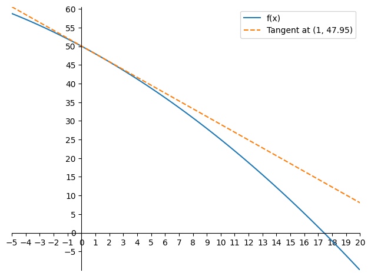
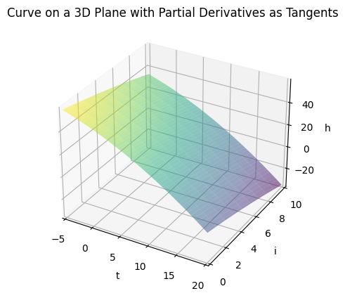

import numpy as np
import matplotlib.pyplot as plt
from mpl_toolkits.mplot3d import Axes3D
plt.rcParams["figure.facecolor"] = (1, 1, 1, 0) # RGBA tuple with alpha=0
plt.rcParams["axes.facecolor"] = (1, 1, 1, 0) # RGBA tuple with alpha=0Partial Derivatives
Ordinary derivatives in one-variable calculus
Your heating bill depends on the average temperature outside. If all other factors remain constant, then the heating bill will increase when temperatures drop. Let’s denote average temperature by \(t\) and define a function \(h:\mathbb{R}\to\mathbb{R}\) where \(h(t)\) is the heating bill as a function of \(t\).
We can then interpret the ordinary derivative as indicating how much the heating bill will change as you change the temperature:
\[ \frac{dh}{dt}(a) = \frac{\text{change in h}}{\text{change in t}}(\text{at t = a}) \]
If we plot \(h\) as a function of \(t\) then \(\frac{dh}{dt}(a)\) gives the slope of the graph at the point where \(t = a\). We say that \(\frac{dh}{dt}\) is the derivative of \(h\) with respect to \(t\). If \(t\) is given in degrees Celsius then \(\frac{dh}{dt}(a)\) is the change in the heating cost per degree Celsius of temperature increase when the temperature is \(a\). Since \(h\) decreases as \(t\) increases, we would expect \(\frac{dh}{dt}\) to be negative (the rate of change in heating cost per degree of Celsius of temperature decrease is positive. But this positive rate is equal to \(-\frac{dh}{dt}\)).
In this example we have a curve:
\[ h(t) = -0.05t^2 - 2t + 50 \]
where \(t\) is the average temperature in degrees Celsius.
The derivative of this curve is:
\[ \frac{dh}{dt} = -0.1t - 2 \]
The derivative gives us the slope of the curve at any point. Since we would like to plot the tangent of the curve were \(t = 1\), we plug that in and get the slope of the tangent line \(m = -0.1 \cdot 1 - 2 = -2.1\).
To find the y-intercept of the tangent line, we first find the value of \(h\) at \(t = 1\):
\[ \begin{align} h(1) &= -0.05 \cdot 1^2 - 2 \cdot 1 + 50 \\ &= 47.95 \end{align} \]
We can find then the y-intercept by using the formula:
\[ (y - y_1) = m(x - x_1) \]
Therefore:
\[ \begin{align} h - 47.95 &= -2.1(t - 1) \\ h &= -2.1t + 2.1 + 47.95 \\ h &= -2.1t + 50.05 \end{align} \]
def f(x):
return -0.05 * x**2 - 2 * x + 50
def df(x):
return -0.1 * x - 2
def tangent_line(x, x0, y0):
slope = df(x0)
return slope * (x - x0) + y0
x0 = 1
y0 = f(x0)
x = np.linspace(-5, 20, 100)
y = f(x)
tangent_y = tangent_line(x, x0, y0)
fig = plt.figure()
ax = fig.add_subplot(1, 1, 1)
ax.plot(x, y, label="f(x)")
ax.plot(x, tangent_y, label=f"Tangent at ({x0}, {y0})", linestyle="--")
ax.set_xmargin(0)
ax.set_ymargin(0)
ax.spines["left"].set_position("zero")
ax.spines["bottom"].set_position("zero")
ax.spines["right"].set_color("none")
ax.spines["top"].set_color("none")
ax.set(xticks=np.arange(-5, 21, 1))
ax.set(yticks=np.arange(-5, 61, 5))
ax.legend()
plt.tight_layout()
plt.show()
Partial derivatives are analogous to ordinary derivatives
Clearly, writing the heating bill as a function of temperature is a gross oversimplification. The heating bill will depend on other factors. For instance the amount of insulation in your house, which we’ll denote by \(i\). We can define a new function \(h:\mathbb{R}^2\to\mathbb{R}\) where \(h(t,i)\) gives the heating bill as function of both temperature \(t\) and insulation \(i\).
Suppose you aren’t changing the amount of insulation in your house, so that we view \(i\) as a fixed number. Then, if we look at how the heating bill changes as temperature changes, we’re back to our first case above. The only difference is that we now view \(h\) as a function of both \(t\) and \(i\), and we are explicitly leaving one of the variables (\(i\)) constant. In this case, we call the change in \(h\) the partial derivative of \(h\) with respect to \(t\), a term that reflects the fact some variables remain constant. We also change our notation by writing the \(d\) as a \(\partial\), so that
\[ \frac{\partial h}{\partial t}(a, b) = \frac{\text{change in h}}{\text{change in t}}(\text{at t = a while holding i constant at b}) \]
If \(t\) is given in degrees Celsius, then \(\frac{\partial h}{\partial t}(a, b)\) is change in heating cost per degree Celsius of temperature increase when the outside temperature is \(a\) and the amount of insulation is \(b\).
Now, imagine you are considering the possibility of lowering your heating bill by installing additional insulation. To help you decide if it will be worth your money, you may want to know how much adding insulation will decrease the heating bill, assuming the temperature remains constant. In other words, you want to know the partial derivative of \(h\) with respect to \(i\):
\[ \frac{\partial h}{\partial i}(a, b) = \frac{\text{change in h}}{\text{change in i}}(\text{at i = b while holding t constant at a}) \]
If \(i\) is given in centimeters of insulation, then \(\frac{\partial h}{\partial i}(a, b)\) is change in heating cost per added centimeter of insulation when the outside temperature is \(a\) and the amount of insulation is \(b\).
The partial derivative \(\frac{\partial h}{\partial i}\) indicates how much effect additional insulation will have on the heating bill. Since additional insulation will presumably lower the heating bill, \(\frac{\partial h}{\partial i}\) will be negative. If additional insulation will have a large effect, then \(\frac{\partial h}{\partial i}\) will be a large, negative number. If, for your house, \(\frac{\partial h}{\partial i}\) is large and negative, you may be inclined to add insulation to save money.
In the graph of \(h(t,i)\), the partial derivatives can be viewed as the slopes of the graphs in the \(t\) direction and in the \(i\) direction.
# TODO Add partial derivative plots to the surface plot
# Define a multivariable function
def f(x, y):
return -0.05 * x**2 - 0.05 * y**2 - 2 * x - 2 * y + 50
# Define the partial derivatives with respect to x and y
def df_dx(x, y):
return 2 * x
def df_dy(x, y):
return 2 * y
def tangent_line_x(x, x0, y0):
slope = df_dx(x0)
return slope * (x - x0) + y0
def tangent_line_y(x, x0, y0):
slope = df_dy(x0)
return slope * (x - x0) + y0
# Generate x and y values for plotting
t = np.linspace(-5, 20, 100)
i = np.linspace(0, 10, 10)
# Create a meshgrid to compute the function values and partial derivatives at each point
X, Y = np.meshgrid(t, i)
Z = f(X, Y)
# Create a 3D plot
fig = plt.figure()
ax = fig.add_subplot(111, projection="3d")
# Plot the function's surface
ax.plot_surface(X, Y, Z, cmap="viridis", alpha=0.5)
ax.set_xmargin(0)
ax.set_ymargin(0)
# Customize the plot
ax.set_xlabel("t")
ax.set_ylabel("i")
ax.set_zlabel("h")
ax.set_title("Curve on a 3D Plane with Partial Derivatives as Tangents")
# Show the plot
plt.show()
Examples of calculating partial derivatives
Once you understand the concept of a partial derivative as the rate that something is changing, calculating partial derivatives usually isn’t difficult. (Unfortunately, there are special cases where calculating the partial derivatives is hard.) As these examples show, calculating a partial derivatives is usually just like calculating an ordinary derivative of one-variable calculus. You just have to remember with which variable you are taking the derivative.
Example 1
Let \(f(x,y) = y^3x^2\). Calulate \(\frac{\partial f}{\partial x}(x,y)\)
Solution:
We simply view \(y\) as being a fixed number and calculate the ordinary derivative with respect to \(x\). \(x^2\) becomes \(2x\) so we are left with:
\[ \frac{\partial f}{\partial x}(x,y) = 2y^3x \]
Example 2
Also for \(f(x,y) = y^3x^2\). Calulate \(\frac{\partial f}{\partial y}(x,y)\)
Solution:
Because this time we are finding the derivative with respect to \(y\) we treat \(x\) as a constant. \(y^3\) becomes \(3y^2\) so we have:
\[ \frac{\partial f}{\partial y}(x,y) = 3x^2y^2 \]
Example 3
Also for \(f(x,y) = y^3x^2\). Calulate \(\frac{\partial f}{\partial y}(1,2)\)
Solution:
\[ \begin{align} \frac{\partial f}{\partial x}(x,y) &= 2y^3x \\ \frac{\partial f}{\partial x}(1,2) &= 2 \times 2^3 \times 1 \\ &= 16 \end{align} \]
Example 4
For
\[ f(x_1, x_2, x_3, x_4) = 3(\frac{cos(x_1x_4)sin(x_2^5)}{\frac{e^{x_2} + (1 + x_2^2)}{x_1x_2x_4}}) + 5x_1x_3x_4 \]
calculate \(\frac{\partial f}{\partial x_3}(a,b,c,d)\)
Solution:
Although this initially looks hard, it’s really any easy problem. The ugly term does not depend on \(x_3\), so in calculating partial derivative with respect to \(x_3\), we treat it as a constant. The derivative of a constant is 0, so that term drops out. The derivative is just the derivative of the last term with respect to \(x_3\), which is
\[ \frac{\partial f}{\partial x_3}(x_1, x_2, x_3, x_4) = 5x_1x_4 \]
Substituting in the values \((x_1, x_2, x_3, x_4)=(a,b,c,d)\), we obtain the final answer
\[ \frac{\partial f}{\partial x_3}(a,b,c,d) = 5ad \]
Example 5
Given
\[ p(y_1, y_2, y_3) = 9(\frac{y_1, y_2, y_3}{y_1 + y_2 + y_3}) \]
calculate \(\frac{\partial p}{\partial y_3}(y_1, y_2, y_3)\) at the point \((y_1, y_2, y_3) = (1, -2, 4)\)
Solution:
In calculating partial derivatives, we can use all the rules for ordinary derivatives. We can calculate \(\frac{\partial p}{\partial y_3}\) using the quotient rule:
\[ \frac{\partial p}{\partial y_3}(y_1, y_2, y_3) = 9(\frac{(y_1 + y_2 + y_3)}{(y_1 + y_2 + y_3)^2}) \]
TODO: finish this example